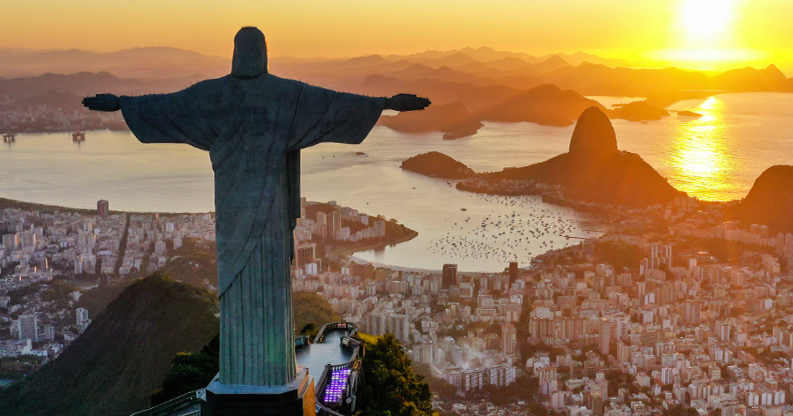

OS 5 PONTOS TURISTICOS MAIS VISITADOS DO BRASIL
- O Cristo Redentor é uma estátua de Jesus Cristo localizada no Rio de Janeiro, Brasil. Inaugurada em 1931, tem 38 metros de altura e está situada no Morro do Corcovado. É um símbolo de fé e foi eleita uma das Sete Maravilhas do Mundo Moderno.
- Ouro Preto é uma cidade histórica em Minas Gerais, Brasil, conhecida por sua arquitetura barroca e igrejas ornamentadas com ouro. Foi a primeira cidade brasileira a ser considerada Patrimônio Mundial pela UNESCO. Surgiu no século 18 como Vila Rica, um importante centro de mineração de ouro, e foi palco da Inconfidência Mineira. Hoje, é um importante destino turístico.
.jpeg) O Parque Ibirapuera, localizado em São Paulo, é um dos locais mais visitados da América Latina. Inaugurado em 1954, o parque é conhecido por suas atrações, incluindo jardins, museus, monumentos, quadras esportivas e um planetário. As construções históricas do parque foram projetadas pelo arquiteto Oscar Niemeyer.
O Parque Ibirapuera, localizado em São Paulo, é um dos locais mais visitados da América Latina. Inaugurado em 1954, o parque é conhecido por suas atrações, incluindo jardins, museus, monumentos, quadras esportivas e um planetário. As construções históricas do parque foram projetadas pelo arquiteto Oscar Niemeyer.- Os Lençóis Maranhenses são uma maravilha natural no Brasil, conhecida por suas dunas e lagoas. Localizado no estado do Maranhão, faz parte do Parque Nacional dos Lençóis Maranhenses, que abriga diversos ecossistemas e espécies de flora e fauna. É o maior campo de dunas da América do Sul e atrai turistas de todo o mundo.
- A Chapada dos Veadeiros, localizada em Goiás, Brasil, é conhecida por suas cachoeiras e trilhas no cerrado. Abriga o Parque Nacional da Chapada dos Veadeiros, uma unidade de conservação que protege uma área do Cerrado de altitude. A região é famosa por seu turismo místico e esotérico, e está sobre uma grande placa de quartzo e uma das formações geológicas mais antigas do mundo.